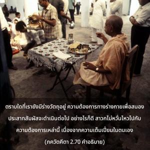

ผู้ที่ไม่หวั่นไหวต่อความต้องการที่ไหลเชี่ยวอย่างไม่หยุดยั้ง เสมือนดังน้ำในแม่น้ำที่ไหลลงสู่มหาสมุทร ซึ่งเต็มเปี่ยมแต่นิ่งสงบอยู่เสมอ จะเป็นผู้เดียวที่สามารถได้รับความสงบ มิใช่บุคคลผู้พยายามสนองความต้องการเหล่านี้

แม้มหาสมุทรอันกว้างใหญ่ไพศาลจะเต็มเปี่ยมไปด้วยน้ำอยู่เสมอโดยเฉพาะในฤดูฝนที่มีน้ำไหลเข้ามาอย่างมากมาย แต่มหาสมุทรก็ยังคงเหมือนเดิม มีความมั่นคง ไม่หวั่นไหว และน้ำไม่เคยข้ามพ้นขอบเขตของมหาสมุทร นี่คือความจริงเช่นเดียวกันกับผู้ที่มีความมั่นคงในกฺฤษฺณจิตสำนึก ตราบใดที่เรายังมีร่างวัตถุอยู่ความต้องการทางร่างกายเพื่อสนองประสาทสัมผัสจะดำเนินต่อไป อย่างไรก็ดีสาวกไม่หวั่นไหวไปกับความต้องการเหล่านี้เนื่องจากความเต็มเปี่ยมในตนเอง บุคคลในกฺฤษฺณจิตสำนึกไม่ต้องการสิ่งใดเพราะว่าองค์ภควานฺทรงประทานสิ่งจำเป็นทางวัตถุทั้งหมดให้อยู่แล้ว ดังนั้นตัวเขาเปรียบเสมือนกับมหาสมุทรที่มีความเต็มเปี่ยมอยู่ในตัวเองเสมอ ความต้องการอาจไหลเข้ามาเสมือนดังน้ำในแม่น้ำที่ไหลลงสู่มหาสมุทร แต่เขายังมั่นคงในกิจกรรมของตนเองเสมอไม่เคยหวั่นไหวแม้แต่เพียงนิดเดียวจากความต้องการเพื่อสนองประสาทสัมผัส นี่คือข้อพิสูจน์ของบุคคลในกฺฤษฺณจิตสำนึก ผู้ที่สูญเสียความต้องการทั้งหมดเพื่อสนองประสาทสัมผัสวัตถุ ถึงแม้จะยังมีความต้องการอยู่ เนื่องจากว่าเขายังคงรักษาความพึงพอใจในการรับใช้องค์ภควานฺด้วยความรักทิพย์จะยังคงสามารถรักษาความมั่นคงเหมือนดั่งมหาสมุทร และจึงได้รับความสุขจากความสงบอย่างเต็มเปี่ยม อย่างไรก็ดี ผู้อื่นที่ต้องการสนองความต้องการของตนแม้จะมาถึงจุดแห่งความหลุดพ้นก็จะไม่ได้รับความสงบจึงไม่จำเป็นต้องกล่าวถึงความสำเร็จทางวัตถุ ผู้ทำงานเพื่อผลประโยชน์ทางวัตถุ ผู้ที่ต้องการความหลุดพ้น รวมทั้งโยคีที่ต้องการอิทธิฤทธิ์ปาฏิหารย์ พวกนี้ไม่ได้รับความสุข เพราะความต้องการจะไม่ได้รับการสนองตอบ แต่บุคคลในกฺฤษฺณจิตสำนึกมีความสุขในการรับใช้องค์ภควานฺและไม่มีความต้องการใดๆที่จะต้องตอบสนอง อันที่จริงเขาไม่ต้องการแม้กระทั่งความหลุดพ้นจากสิ่งที่เรียกว่าพันธนาการทางวัตถุ สาวกของศฺรี กฺฤษฺณไม่มีความต้องการทางวัตถุ ดังนั้นจึงเป็นผู้ที่มีความสงบอย่างสมบูรณ์บริบูรณ์